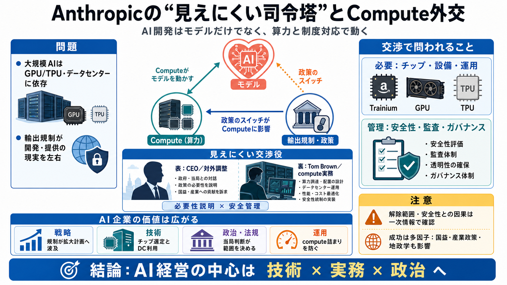

Anthropic Cofounder Tom Brown Secures White House Export Deal | Trending Stories | HyperAI
Search for a command to run... Tom Brown, Anthropic’s chief compute officer and a founding engineer, has emerged as the …

Search for a command to run... Tom Brown, Anthropic’s chief compute officer and a founding engineer, has emerged as the …
[](https://www.theinformation.com/deep-research). [](https://www.theinformation.com/)Pro menu. * [About Pro](https://w…
# The Trump Administration Is Lifting Its Export Controls on Anthropic’s Mythos and Fable AI Models. The White House is …
Tom Brown, an Anthropic cofounder, helped mediate the White House complaints over Fable and Mythos. His background in AI…
Brown is a co-founder and the chief compute officer at Anthropic, the artificial intelligence company behind the Claude …